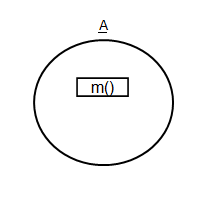
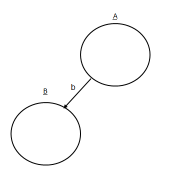
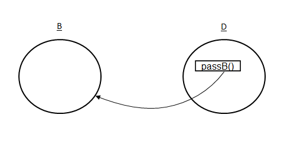
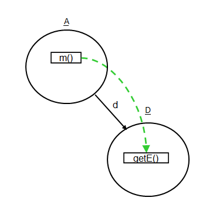

オブジェクト呼び出し図は，オブジェクト図に呼び出し木を埋め込んだ表現で，メソッド間の呼び出し関係とオブジェクト間の参照関係を同時に閲覧できる可視化手法です．
オブジェクト呼び出し図では，各オブジェクトは円で表され，円の上にそのクラス名が記されます．
また，メソッドの各実行は円の内部の矩形で示され，矩形の内部にメソッド名が記されます．
例えば以下の図は，A クラスのインスタンスのメソッド m() が実行されている様子を表しています．

円の間を結ぶ太い実線矢印はフィールドによるオブジェクトの参照(すなわち参照元のオブジェクトが参照先のオブジェクトをそのフィールドで参照していること)，破線矢印はオブジェクトの生成を示します．
例えば以下の図は，A クラスのインスタンスが B クラスのインスタンスをフィールド b で参照している様子を表しています．

矩形から円への細い実線矢印はメソッド内に定義された引数やローカル変数によるオブジェクトの参照を示します．
例えば以下の図は，D クラスの passB() メソッド内に定義されたローカル変数もしくは仮引数が， B クラスのインスタンスを参照している様子を表しています．
なお，赤い実線矢印は，このプログラムの実行途中に参照先のオブジェクトをフィールドやローカル変数などで参照するようになったこと(参照の生成)を示します．

メソッド呼び出しは，矩形の間を結ぶ緑色の破線矢印で表されます．
あるクラスのクラスメソッド(staticメソッド)が呼び出された場合は，そのメソッド実行はクラス自体を表す矩形の内部に表示されます．
例えば以下の図は，A クラスの m() メソッドが D クラスの getE() メソッドを呼び出している様子を表しています．
